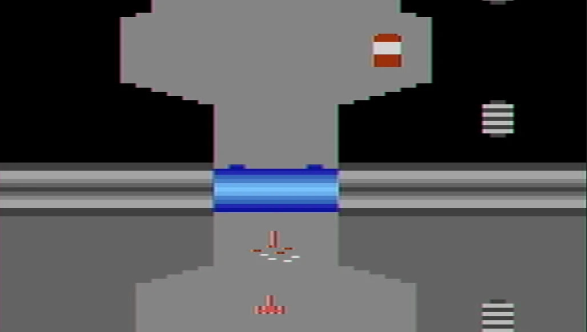
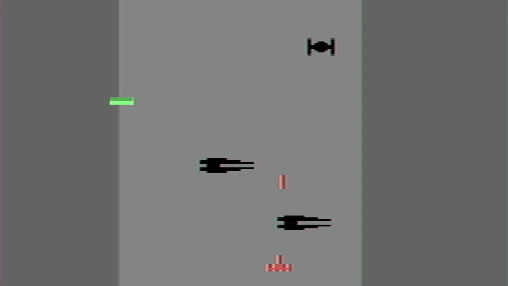
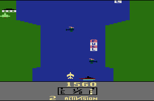
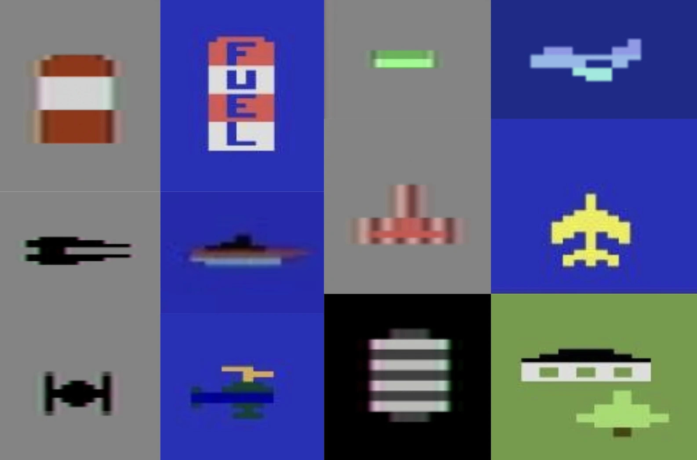
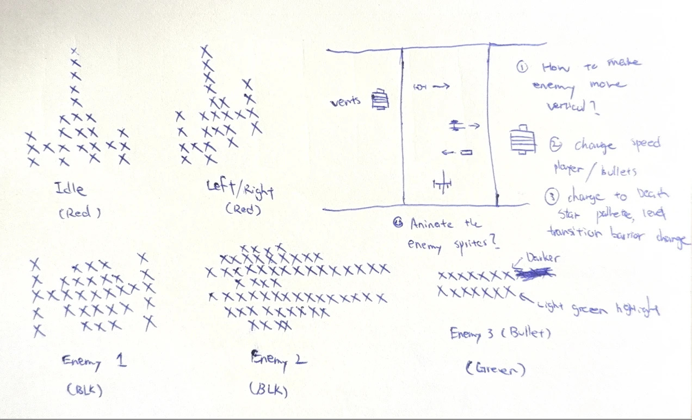
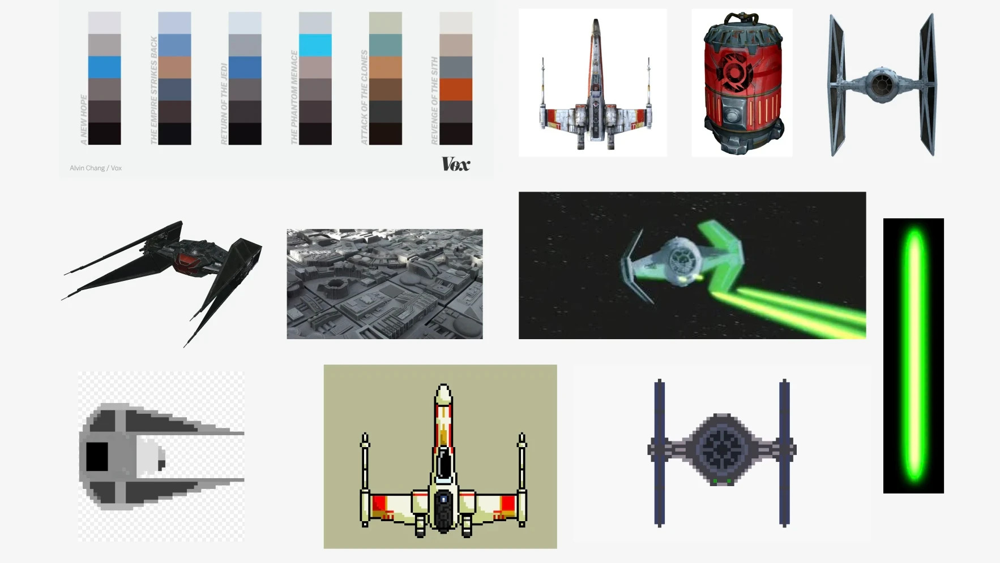

DAVID LIANG · NON-COMMERCIAL REDESIGN
River Raid
Star Wars Redesign
A Star Wars-inspired visual redesign of Carol Shaw’s 1982 Atari 2600 classic River Raid, exploring how art and pacing can change the feel of familiar mechanics.
About the Game
The redesign keeps River Raid’s core gameplay while replacing its visuals with a Death Star-inspired setting, new player and enemy sprites, and a revised color palette.



Design Goals & Challenges
I edited the assembly code to increase projectile speed and adjust steering, creating a faster feel without replacing the original gameplay loop. I also redesigned every player and enemy sprite.
Assembly required a different workflow from Unity. Even small pixel changes involved careful adjustments to memory and coordinates, making sprite placement the biggest learning challenge.



Credits
All copyrights and original design belong to Activision. This is a non-commercial visual redesign of Carol Shaw’s classic game River Raid.
Original project write-up ↗